Introduction to CNNs
Convolutional Neural Networks (CNNs) have revolutionized the field of computer vision, enabling breakthroughs in image classification, object detection, and more. I recently started reading papers from scratch and during that I am trying to implement and understand things more deeply. This is partly inspired by the original AlexNet paper and Mechanistic Interpretability work by Chris Olah. I had many questions while reading the AlexNet paper, so I decided to write everything from scratch, and during that process, I got an idea to visualize things as I go.
My Takeaways from AlexNet
- Scale helps: The AlexNet paper demonstrated that increasing the size of the network (more parameters and deeper layers) significantly improved performance. The use of a much larger model compared to earlier networks showed that scale is crucial in achieving higher accuracy. The authors used 60 million parameters and 650,000 neurons, which was unprecedented at the time and allowed the network to learn complex patterns effectively.
- GPUs are a big reason for today's models: The AlexNet architecture was one of the first to leverage GPUs for training, which drastically reduced training time and made it feasible to train deep networks on large datasets like ImageNet. This showed the importance of hardware acceleration in deep learning. Specifically, they used two NVIDIA GTX 580 GPUs to parallelize the training process, which enabled faster computation by splitting the network across both GPUs.
- Data at scale, new dataset: AlexNet was trained on the ImageNet dataset, which consisted of over a million labeled images. The scale of the data was a key factor in its success, proving that having a large, diverse dataset is essential for training powerful models. The ImageNet dataset had 1.2 million training images distributed across 1,000 classes, allowing the model to learn a wide variety of features that generalized well.
- The depth of the model at the time had a big impact: AlexNet had 8 layers, which was significantly deeper than previous models. This depth allowed the network to learn more complex features and hierarchical representations, contributing to its high accuracy. The architecture included 5 convolutional layers and 3 fully connected layers, which helped capture increasingly abstract features at each layer.
- Tanh vs ReLU: The paper introduced the use of ReLU (Rectified Linear Units) instead of the traditional tanh or sigmoid activation functions. ReLU helped mitigate the vanishing gradient problem, enabling faster training and better convergence in deep networks. ReLU non-linearity allowed the model to train several times faster compared to using tanh, as it reduced the likelihood of gradients shrinking during backpropagation.
- Normalization: The use of Local Response Normalization (LRN) in AlexNet helped improve generalization by normalizing the activities of neighboring neurons, which provided a form of lateral inhibition similar to what occurs in biological neurons. This was particularly beneficial for enhancing the generalization of the model in deeper layers and helped the network converge more reliably.
- Overlapped pooling: Unlike earlier models, AlexNet used overlapping pooling layers, which helped reduce overfitting and improve the generalization of the model by adding more spatial context to each pooled feature. The authors used pooling windows of size 3x3 with a stride of 2, rather than non-overlapping pooling, which provided more robust feature maps by retaining more spatial information.
- Dropout regularization: Dropout was introduced as a regularization technique to reduce overfitting by randomly dropping units during training. This helped the model generalize better by preventing neurons from co-adapting too much. Dropout was applied to the fully connected layers with a rate of 0.5, which significantly reduced overfitting and helped the model perform better on unseen data.
Original vs. Normalized Images
Original Image
- Description: The unaltered, raw input image with original pixel intensity values.
- Features: Retains original colors, brightness, and contrast as captured or provided in the dataset.
- Role: Serves as the initial input to the model without any preprocessing.

Normalized Image
During my experiments, I noticed how this normalization step makes a huge difference in training. By scaling pixel values to a standard range (typically between 0 and 1 or -1 and 1), we're essentially leveling the playing field for all our input data. It's like giving our CNN a standardized language to work with, rather than having it deal with wildly varying scales. This preprocessing step might seem simple, but it's one of those foundational concepts that every deep learning practitioner should understand. Having the mean centered at 0 is particularly valuable, as it helps maintain gradient symmetry and works especially well with activation functions like tanh that are centered around 0. This centering enables the network to learn both positive and negative correlations more easily while helping to mitigate floating point precision issues. Remember, the goal isn't just to make the images look different - it's about making them more suitable for our neural networks to process and learn from. Through visualization, we can better appreciate how this transformation affects our input data, even if the changes aren't always obvious to the human eye.
- Scaling pixel values between 0 and 1 or -1 and 1.
- Adjusting pixel intensities to standardize the data distribution.
- Purpose: Enhances model training stability and accelerates convergence by ensuring consistent input ranges.

I won't go much into building models because there are way better sources for that.
Model Architecture
Creating a CNN involves stacking layers that progressively extract higher-level features from the input images. Below is a guide to building a simple CNN, with considerations for kernel sizes and padding.
model = models.Sequential()
# Convolutional Layer 1
model.add(layers.Conv2D(32, (3, 3), activation='relu', padding='same', input_shape=(height, width, channels)))
model.add(layers.MaxPooling2D((2, 2)))
# Convolutional Layer 2
model.add(layers.Conv2D(64, (5, 5), activation='relu', padding='same'))
model.add(layers.MaxPooling2D((2, 2)))
# Convolutional Layer 3
model.add(layers.Conv2D(128, (7, 7), activation='relu', padding='same'))
model.add(layers.MaxPooling2D((2, 2)))
# Fully Connected Layers
model.add(layers.Flatten())
model.add(layers.Dense(256, activation='relu'))
model.add(layers.Dense(num_classes, activation='softmax'))Visualizing with Grad-CAM
Grad-CAM Overview
Gradient-weighted Class Activation Mapping (Grad-CAM) is a technique that uses the gradients of any target concept (e.g., a specific class) flowing into the final convolutional layer to produce a localization map highlighting important regions in the image for predicting the concept.
During my deep dive into CNNs, one question kept nagging at me: how can we actually see what our model is looking at? This is where Gradient-weighted Class Activation Mapping (Grad-CAM) comes in, and it feels like getting X-ray vision into our neural networks.
Kernel Analysis
Different kernel sizes in CNNs affect the receptive field and feature extraction capabilities. Let's analyze how kernel size impacts the network's ability to capture patterns through activation maps and Grad-CAM visualizations:
- 3x3 Kernels: These small kernels excel at capturing fine-grained, local features while being computationally efficient. They're ideal for detecting detailed textures and precise edges.
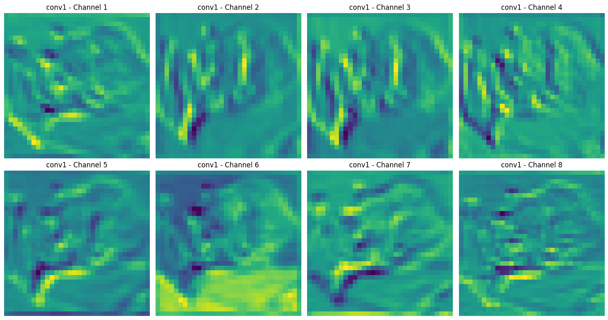
- This model with 3x3 kernels is taking arm of the cat as most important part to identify that it's a cat.
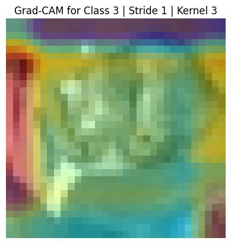
- 5x5 Kernels: Medium-sized kernels provide a balance between local and global feature detection. They capture broader patterns while maintaining reasonable detail sensitivity.
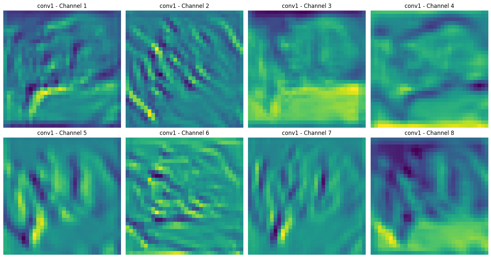 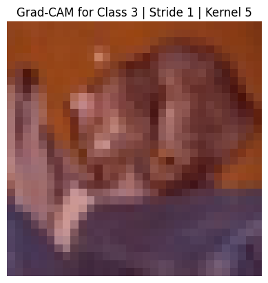
- 7x7 Kernels: Larger kernels have a wider receptive field, making them better at capturing global patterns and larger-scale features at the cost of fine detail.
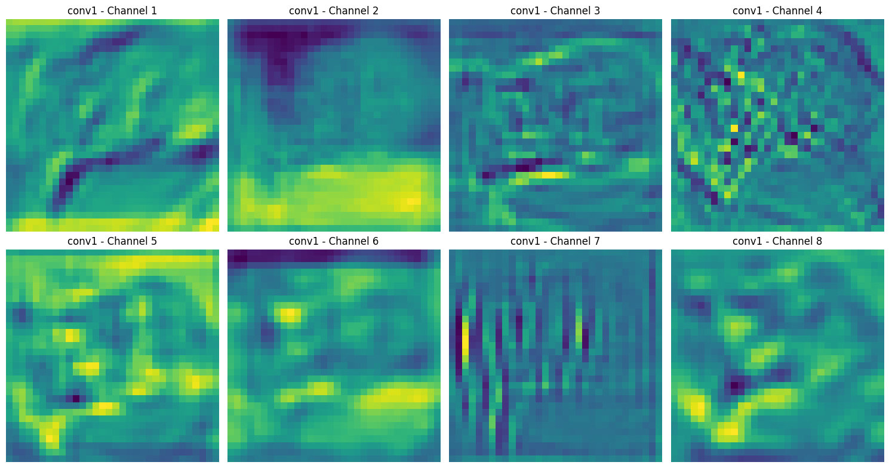 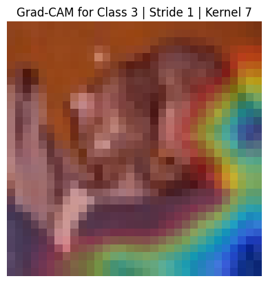
- This model with is giving importance to body shape or border of the cat.
Key insights from kernel size comparison:
- Detail Sensitivity: Smaller kernels (3x3) preserve fine details but may miss broader context
- Receptive Field: Larger kernels (7x7) capture wider spatial context but may lose local details
- Computational Cost: Kernel size directly impacts the number of parameters and computational requirements
- Feature Hierarchy: Different kernel sizes affect how the network builds its representation hierarchy
Padding Analysis
By examining Grad-CAM visualizations with different padding configurations, we can understand how padding affects feature detection and model performance. Below are visualizations demonstrating the impact of padding settings:
- Padding 0 (No Padding): Features near the edges may be lost due to kernel operations truncating the input size. This can be problematic when important features are located near image boundaries.
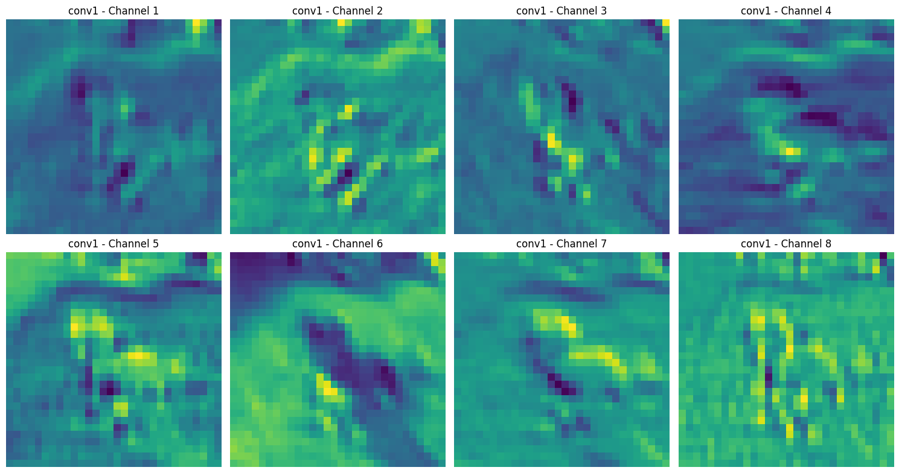 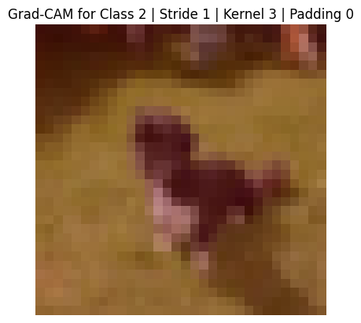
- Padding 1: Preserves spatial dimensions and maintains feature detection capability at the edges. This is particularly useful for deep networks where maintaining spatial information is crucial.
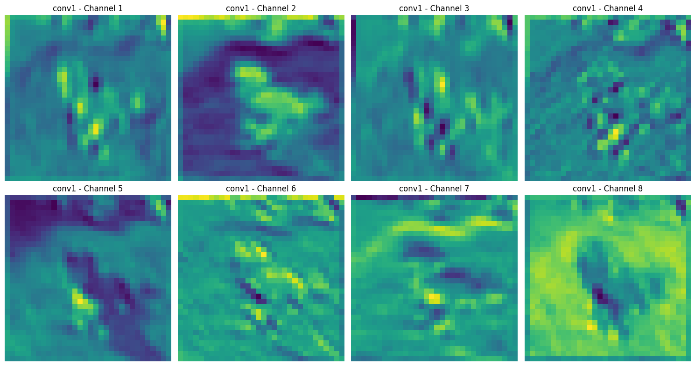

- With padding it takes background to understand if image is related to dog or not. This type of situation and throw off your model results. But padding is usually good practice.
Key observations from the padding comparison:
- Edge Information: With padding=1, the network preserves edge features that would otherwise be lost, leading to more complete feature extraction
- Spatial Dimensions: Padding helps maintain the spatial dimensions of feature maps through multiple convolution layers
- Feature Distribution: Notice how padding affects the distribution and intensity of activations, particularly near image boundaries
Stride Analysis
Stride configuration significantly impacts feature detection and spatial resolution in CNNs. Let's examine how different stride values affect feature extraction through activation maps and Grad-CAM visualizations:
- Stride 1 (Default): Provides maximum spatial resolution by processing every possible position. This configuration captures fine-grained features but requires more computational resources.
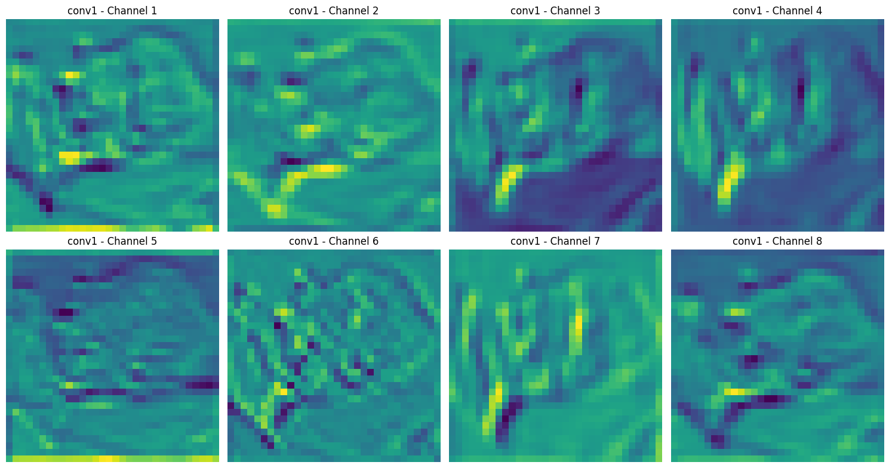 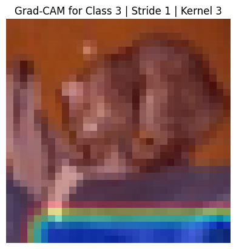
- Stride 2: Reduces spatial dimensions by skipping every other pixel, leading to a more compact representation while potentially sacrificing some fine details.
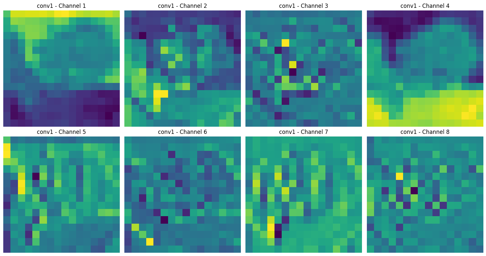
Key observations from stride comparison:
- Resolution Trade-off: Higher stride values reduce spatial dimensions but may lose fine-grained details
- Computational Efficiency: Increased stride reduces computational overhead by processing fewer spatial locations
- Feature Hierarchy: Different stride configurations affect how the network builds its hierarchical representation of features
Conclusion
Building and visualizing CNNs is an iterative process that requires careful consideration of various architectural components:
- Kernel Configurations: Whether using 3x3 for fine details or 7x7 for broader patterns, kernel size choices significantly impact feature extraction capabilities
- Stride Settings: The balance between computational efficiency and spatial resolution determines how effectively your model processes information
- Padding Options: Proper padding strategies help preserve spatial dimensions and maintain edge information throughout the network
Through visualization techniques like Grad-CAM, we can:
- Gain deeper insights into model decision-making processes
- Debug and optimize network architectures
- Make informed adjustments to improve model performance
- Better understand feature extraction hierarchies
For further reading, explore our resources and experiment with your own CNN models using the concepts discussed here.
Additional Resources
CNN Visualization Tools
- Grad-CAM Resources:
- Original Grad-CAM Paper: "Grad-CAM: Visual Explanations from Deep Networks via Gradient-based Localization"
- PyTorch Implementation:
pytorch-grad-camlibrary - TensorFlow Implementation:
tf-keras-vislibrary
Interactive Learning
- CNN Explainer: Interactive visualization of CNNs
- TensorFlow Playground: Experiment with neural networks in browser
- Distill.pub's CNN Articles: Visual, interactive explanations of CNNs
Implementation Guides
- Deep Learning Frameworks:
- PyTorch CNN Tutorials
- TensorFlow CNN Guides
- FastAI CNN Implementation Examples
Further Reading
- Research Papers:
- "Visualizing and Understanding Convolutional Networks" by Zeiler and Fergus
- "Deep Inside Convolutional Networks" by Simonyan et al.
- "Understanding Deep Image Representations by Inverting Them"